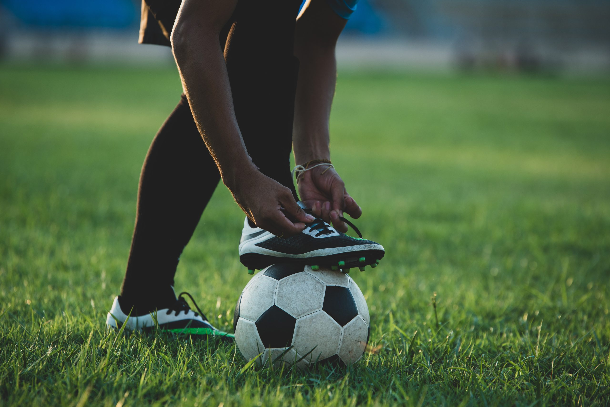
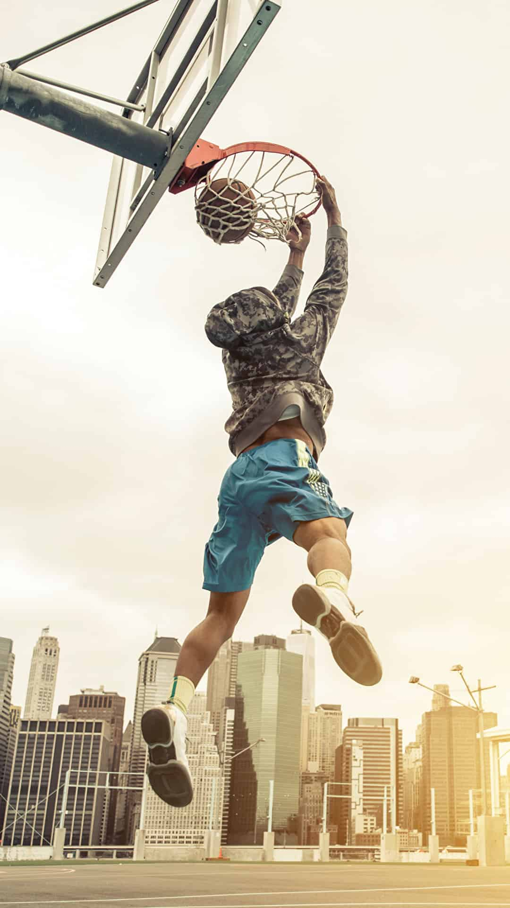
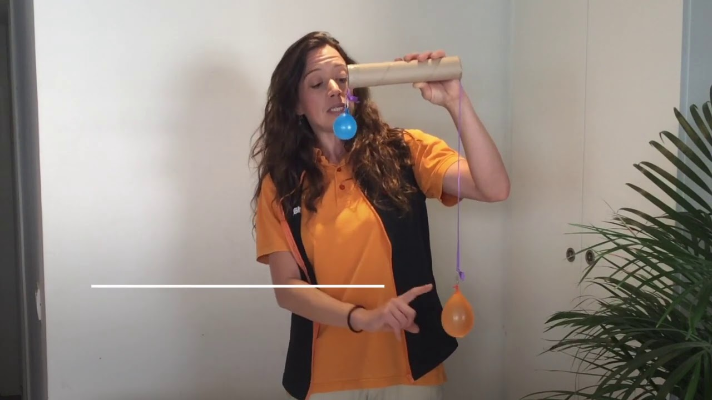

Torneo Deportivo Intercursos


Los estudiantes participaron en un emocionante torneo de fútbol y baloncesto, promoviendo el trabajo en equipo y la sana competencia.


Los estudiantes participaron en un emocionante torneo de fútbol y baloncesto, promoviendo el trabajo en equipo y la sana competencia.

Los alumnos presentaron proyectos muy interesantes relacionados con la ley de Newton y la gravedad.
Encuentra nuestra escuela en el mapa y descubre cómo llegar fácilmente.